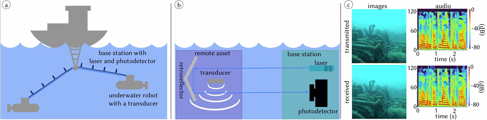
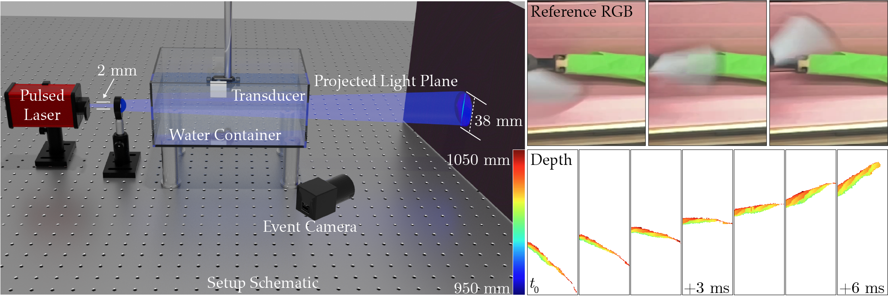
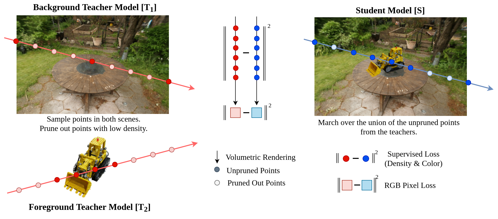

I'm a PhD candidate at Dartmouth working with Prof. Adithya Pediredla in the Rendering and Imaging Science Lab (RISc). My research focuses on building novel imaging systems by leveraging various sensor modalities (namely event cameras, RGBD sensors, etc.). My current research focuses on novel acousto-optic imaging systems for fast scanning and communication applications. I am particularly interested in exploring ways to harness ML and non-ML methods for various real-world applications. Prior to my PhD, I completed my Master’s working with Prof. PJ Narayanan at the intersection of 3D Vision and Real-Time Graphics.
Contact
Research Interests
Some things I'm interested in:
- Sensors (ToF, motion contrast, etc.)
- ML for imaging
- Processing sensor data
- HPC and automation for real-world applications
Personal
Some personal facts:
- I like capturing low-light images.
- Listening to music (less lyrical).
- Driving (I enjoy driving long distances).
- I collect a lot of superhero merchandise and am fond of bubble tea.
- I am borderline dyslexic (or maybe mildly dysgraphic, as ChatGPT suggests), so I occasionally (debatable 😬) invent new spellings for words like friend → freind or field → feild. And yes, this page has been corrected by ChatGPT.
Publications
* = Equal contribution
-
Underwater Optical Backscatter Communications using Acousto-Optic Beam Steering
SIGGRAPH Asia (ACM ToG), 2025 (To appear)
 -
Structured light with a million light planes per second
ICCP (TPAMI), 2025
 -
GSN: Generalisable Segmentation in Neural Radiance Field
AAAI, 2024

-
FusedRF: Fusing Multiple Radiance Fields
XRNeRF CVPR Workshop, 2023
 -
Interactive Segmentation of Radiance Fields
CVPR, 2023

-
Real-Time Rendering of Arbitrary Surface Geometries using Learnt Transfer
ICVGIP, 2022

-
Learnt Transfer for Surface Geometries
HPG (Poster), 2022
-
StyleTRF: Stylizing Tensorial Radiance Fields
ICVGIP, 2022

-
PRTT: Precomputed Radiance Transfer Textures
arXiv, 2022
-
Transfer Textures for Fast Precomputed Radiance Transfer
EuroGraphics (2-page Poster), 2022
-
Neural View Synthesis with Appearance Editing from Unstructured Images
ICVGIP, 2021
-
Appearance Editing with Free-viewpoint Neural Rendering
arXiv, 2021
Projects
-
Using AO to Sculpt and Steer Light Planes at High Speeds for Scanning Applications
Research Project
This project focuses on leveraging Acousto-Optic (AO) techniques to dynamically sculpt and steer light planes at high speeds, enabling efficient and precise scanning applications.
-
Underwater Communication
Research Project
This project explores the use of Acousto-Optic (AO) sculpting techniques to enhance underwater communication systems.
-
Object Retrieval from Radiance Fields
Research Project (with Dr. Rajvi Shah)
Interactive object and sub-scene retrieval from scenes represented as Radiance Fields. The work involves growing high-confidence object content to encompass intricate details, aiming for accurate retrieval.
-
Real-time Rendering of Implicit Surfaces using Precomputed Radiance Transfer
Thesis · CVIT, IIIT-H, 2022
A simple yet fast approach to address the lack of storage schema in the functional representation of surfaces for the incorporation of Precomputed Radiance Transfer (Spherical Harmonics) for both glossy and diffuse materials.
-
Exploring Storage Schemas for Transfer Vector Storage
Research Project · IIIT-H, 2022
Exploration of storage schemas (UV and vertex attributes) to find optimal sampling and interpolation strategies for artifact-free renders.
-
Appearance Editing and Novel View Synthesis of Captured Data
Research Project · CVIT, IIIT-H, 2021
Extends Novel View synthesis pipelines to accommodate appearance edits. Uses differentiable rendering to separate appearance, followed by a disentangled rendering framework.